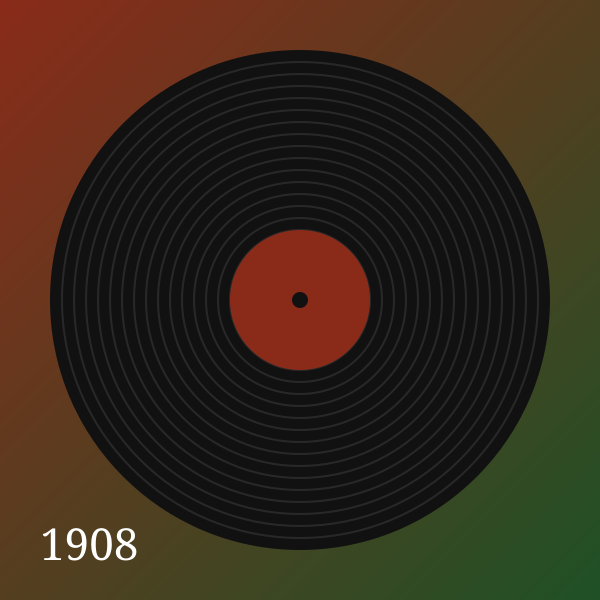

Nubar Effendi, “Vatan Canto” (Odeon 54584, 1908–1909)

Background: The archive publishes Turkish lyrics and an English translation. The refrain reads:
Proposed role: Constitutional-revolution context / freedom-and-equality rhetoric
Why it fits / decision: The recording is dated 1908–1909 in Constantinople and celebrates the constitutional-era language of freedom, justice, equality and nation. It belongs alongside the 1908 “Marche Huriet” as evidence of the musical rhetoric circulating around the Young Turk / constitutional revolution.